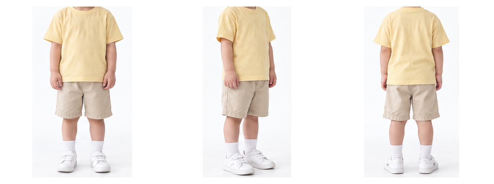
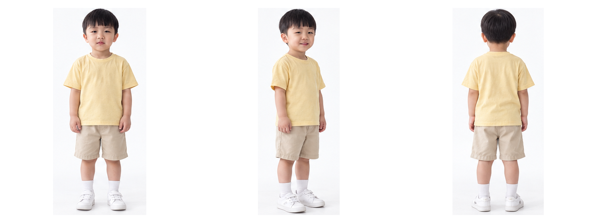
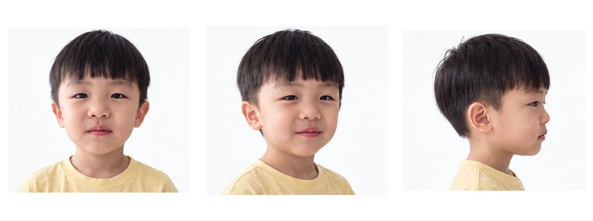
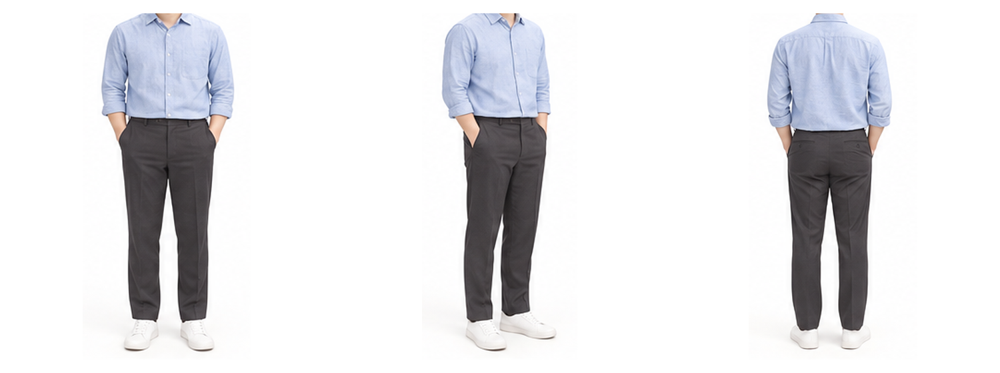
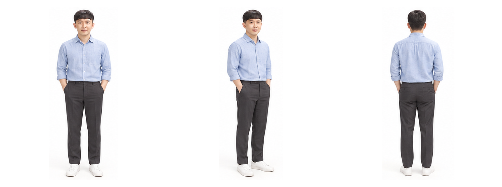
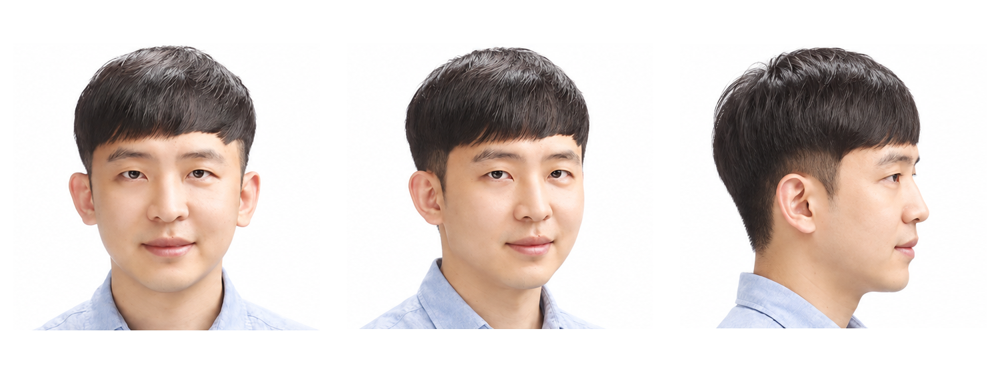
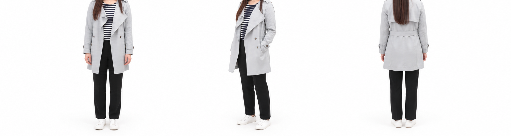
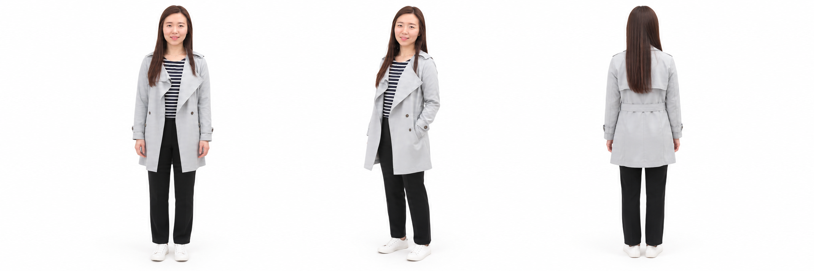
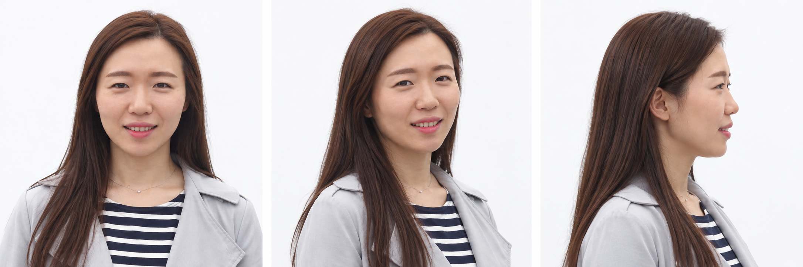

서진
목 아래부터 발끝까지



머리 포함 전신



얼굴 중심 상반신



철민
목 아래부터 발끝까지



머리 포함 전신



얼굴 중심 상반신



릴리
목 아래부터 발끝까지



머리 포함 전신



얼굴 중심 상반신

캐릭터만, 필요한 구도로.
글자·로고·설정 설명을 뺀 이미지입니다. 원본의 얼굴과 의상을 유지해 분리했습니다.








